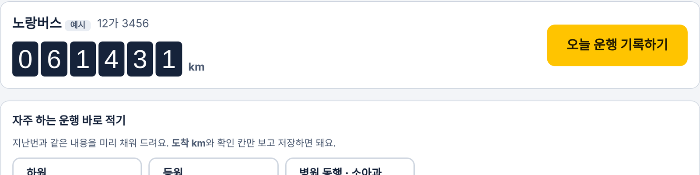
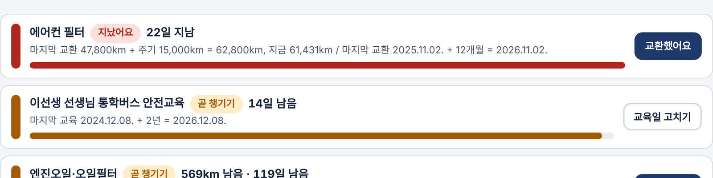
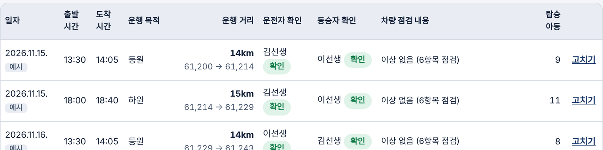
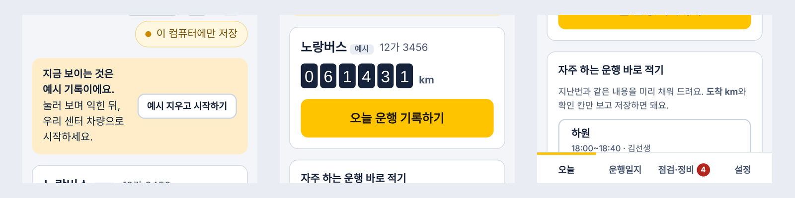
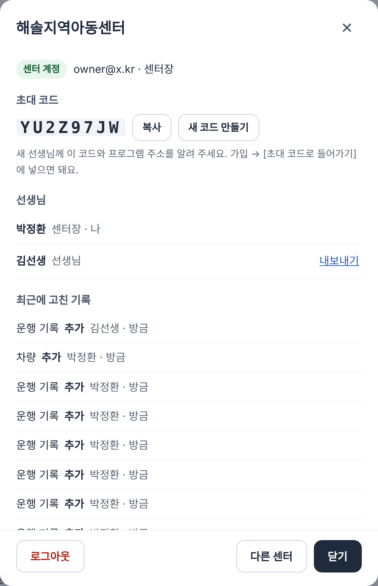

1이런 문제가 있었어요
장면 1 · 점검 시기
엔진오일·검사 날짜를 잊고 지나쳐요
장면 2 · 운행일지
종이 일지에 거리를 손으로 계산해요
장면 3 · 청구 서류
영수증·유류수불대장을 따로 모아 정리해요
2이렇게 해결해요
운행 기록하기
도착 km · 운전자·동승자 확인 · 6가지 점검
▶
규칙으로 계산
교환 주기 · 남은 km · 검사·보험 만기
▶
알림 · 인쇄
오늘 화면 알림 · 월 운행일지 · 청구용 · 한글(.hwpx)
AI 없이 정해진 규칙으로만 — 계산 근거(예: 마지막 교환 52,000km + 주기 10,000km)를 화면에 그대로 보여 줘요.
3주요 기능

01오늘 화면
노란 차 노랑이가 알려 주는 점검 상태 · 자주 하는 운행 바로 적기

02점검·정비 알림
지났어요 · 곧 챙기기 · 계산 근거, 영수증 양식 인쇄

03운행일지
종이 일지처럼 표에 바로 적기 · 달마다 마감·결재

04PC·휴대폰 같은 화면
아래쪽 탭, 손가락으로 누르기 쉬운 큰 단추
4이 컴퓨터에만, 또는 센터 계정으로 함께NEW
A이 컴퓨터에만 저장 (기본)
- 가입 없이 바로, 비용 0원
- 아동 정보가 밖으로 나가지 않아요
- 백업 받기 · 기록 모두 지우기
(공용 PC·담당자 바뀔 때)
B센터 계정 (선택)
- 어느 컴퓨터·휴대폰에서든 로그인하면 우리 센터 운행·정비 기록이 보여요
- 센터장이 만든 초대 코드로 선생님 여러 명이 함께
- 누가 언제 고쳤는지 남고, 인터넷이 끊겨도 보관했다가 보내요
- 아동 사진은 서버에 올리지 않아요 · 로그아웃하면 그 컴퓨터에서 지워요
오른쪽 위 단추 하나로 바꿔요 · 글자 크게 · 사용 안내 · 화면 밝기 (팀 프로젝트 기능) · 자동 테스트 6종 통과 (규칙 24 · 화면 46 · 시트 17)

0원
설치·AI 비용 없이 (센터 계정도 무료 요금제로)
1번
청구용 인쇄 한 번에 일지+영수증+유류수불대장
20초
PC·휴대폰·선생님끼리 함께 저장 반영